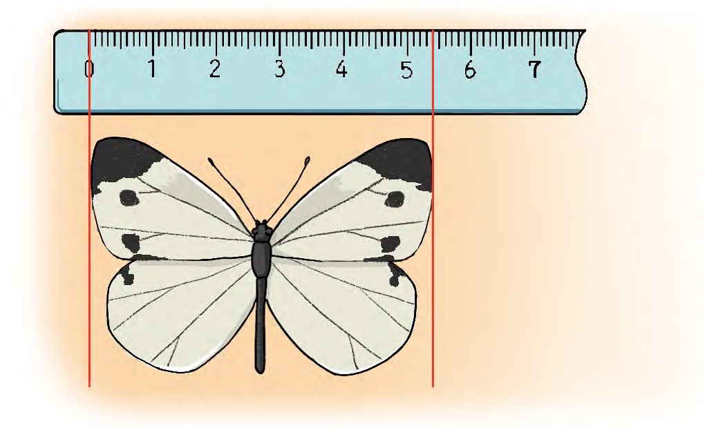

6. 분수와 소수
소수를 알아볼까요(2)
전개
수학
134
쪽
수학 익힘
96
쪽
배추흰나비 날개의 길이를 cm로 나타내는 방법을 알아봅 시다.

배추흰나비 날개의 길이는 5 cm보다 몇 mm 더 긴가요?
mm
1 mm는 몇 cm인지 소수로 나타내 보세요.
cm
4 mm는 몇 cm인지 소수로 나타내 보세요.
cm
배추흰나비 날개의 길이는 몇 cm인지 소수로 나타낼 수 있을까요?